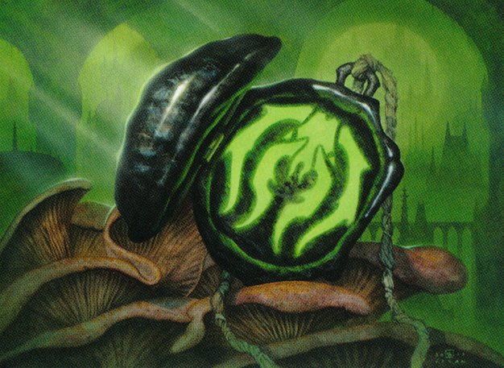
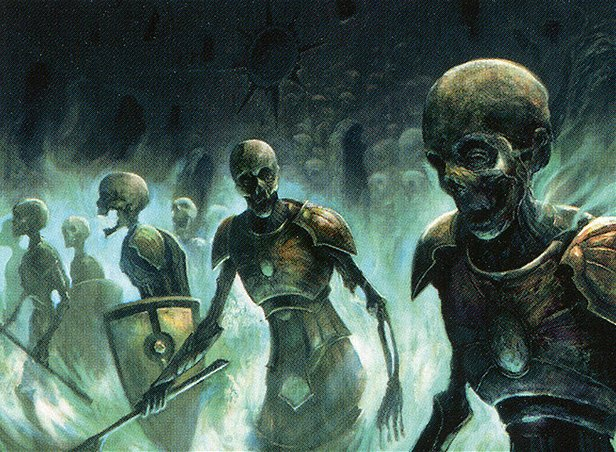
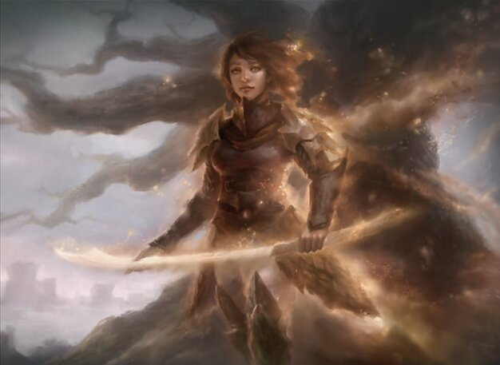

The Immortality of Necromancy
Written by Mana_Guardian
There's a game that I used to play but have recently fallen out of love with called Magic: The Gathering. I wanted to focus particularly on some of my favorite ways the game has portrayed Necromancy. The definition of "Necromancy" as a word can vary across time and place. The ancient Greeks used the word to refer specifically to contacting the dead for information, usually so it could be exorcised. The exorcists that performed these rites to lay spirits to rest were called psychagōgoi "ghost evocators" (Ogdan, pg 98-101). The Medieval Christian world used "Necromancy" to talk about almost any type of magic as, but it was usually applied to the summoning of demons (Esoterica, Sledge). Modern fiction usually uses the word to refer to any type of magic that involves death, with the specifics varying from case to case. The consistent throughline between these different views is the negative connotations of Necromancy. Many ancient Greek writiers chose to distance Necromancy's origin by claiming that the rituals originated from Persia, Babylonia, or Egypt, with there being little evidence that Greek Necromancy came from external cultures (Ogdan, page 132-140). The Catholic church at best tolerated Necromancy, because of how it was inextricably linked with exorcism, but would later ban these exorcist manuals in the 16th to 17th century (Esoterica, Sledge). Most modern fiction inherits a form of this same view and associates it primarily with liches and evil sorcerors. Magic: The Gathering mostly falls in line with this view in its portrayals. Such as the Orzhov Syndicate that shackle and enslave the souls of people in debt to them even after death. However, there are also examples of more nuanced portrayals. Such as the Abzan a faction that preserves the spirits and knowledge of their ancestors. Resurrection magic varies in weather it has positive or negative associations, but for this essay I'll be considering it as part of Necromancy since it tends to be a defining aspect in modern depictions. In the context of Magic: The Gathering the group I'll be focusing on is the Golgari Swarm. They're a group that uses resurrection magic frequently on their members. “Wear it at all times. It will guide our reanimators to your corpse.” – Mazirek, kraul death priest
Golgari Locket | Art by Milivoj Ćerun Some ancient Greek depictions would sometimes show the resurrect persons having gained some knowledge usually through some journey to and from the Underworld. Some religious groups had myths about figures like Epimenides, who would leave behind his body as his soul journeyed to the Underworld. These stories claimed that the journey gave Epimenides and figures like him a more direct means of contacting the spirits and cthonic gods (Ogdan 118-124). Necromancy through calling upon information about death it can allow the impact of the dead to persist. Weather this is done directly through resurrection or more indirectly through calling upon them for information. These Necromantic practices become tools for rebirth by reframing how we understand life death, viewing it as a cycle. Necromancy becomes the means of understanding and having greater command over that cycle. There is an almost instictual discomfort most people have towards Necromancy. When I've mentioned the topic to... for lack of a better term normal people, they have a visible discomfort with it. Some of this is people's general unease with death and anything associated with it. Therefore, I suppose I shouldn't be surprised that people think I'm crazy when I mention my fascination with both death and Necromancy. I also admit there exists the power for Necromancy to be used for what is effectively enslavement. For example, the bank and criminal organization (but I repeat myself) the Orzhov Syndicate. The Orzhov Syndicate through a combination of legal loopholes and magic awaken the spirits of the people who died in debt to them to continue working. They will take the corpses of these people, and sculpt them into grotesque abominations. Thrull. All of this made possible in part because of Necromancy. “The fine print of countless contracts has ensured we are never defenseless.” – Teysa Karlov, Grand Envoy of Orzhov
Immortal Servitude | Art by Seb Mckinnon However, I think this case is also an issue of conflation. Necromancy may allow for this, but it is not the cause. The Orzhov's abuse of these people comes from their sole profit motivation leading them to drive people into debt. This motivation and the impersonal acts it necessitates drives them to dehumanize their clients. Weather the Orzhov were using Necromancy or not they would still be enslaving people through debt and working them to death. The cause of these crimes is the larger structural insentives and a legal system that allows them to get away with it. There are deeper reasons why people associate Necromancy with evil. Necromancy at its core tries to erase the line between life and death, and this conflicts with what people perceive as natural. However, what is natural does not always equate to what is good, and I would argue that Necromancy has many tools that can be portrayed in interesting ways. The oldest type of Necromancy, and generally least controversial, is contacting the dead for information. In the Ancient Greek Magical Papyri there are spells used to contact spirits to learn about their grienvances and lay them to rest (Betz, PDM lxi 79-94). The use of these spells was laying spirits to rest, but they could easily be used for other pruposes. Such magic could be used to preserve knowledge, or get direct accounts from historical figures. Magic: The Gathering has several examples of this type of Necromancy, from the archaeologists of Lorehold, to the ancestoral echoes of Ixalan. The example I wanted to focus on is the Abzan clan a society that places a profound emphasis on family, and especially on preserving their ancestor's souls in the roots of their trees. However, other clans dislike this practice attempt to destroy it. Martyred for worshipping her ancestors, she now walks among them.
Anafenza, Kin-Tree Spirit | Art by Ryan Yee The Abzan despite their best efforts would not be eternal. A group by the name of the Dromoka would conquer them and destroy their kin-trees. Their leading Khan would be forced to give up their spirits in order to ensure his clans lives. The Dromoka performed this expungment both out of a distaste with the practice, but also to destroy the Abzan's link to their own history. That's why Anafenza was killed and now is only remembered as a ghost. Their use of Necromancy though towards ultimately good ends was demonized regardless, and thus destroyed by those that feared it. What originally drew me to Necromancy was the aspect of immortality and resurrection. Resurrection to me embodies Necromancy as a whole, giving new life to what was a corpse and through this a potential rebirth. This theme has ties to older conceptions of Necromancy, most notably Orphism. Orphism was an ancient Greek religious movement beginning in the 5th century BC, focused on mythological figures who entered and returned from the underworld. Such as myths of Pythagoras spending hundreds of years in the underworld and through this gaining a special form of contact with the gods and spirits and thus a form of enlightenment1 (Ogdan 118-121). Through their journeying into the Underworld they underwent a great change and purification of the soul, effectively being reborn anew in a form of resurrection. Through this view Necromancy becomes a tool of renewal. In doing so it blurs the line between life and death, because to a Necromancer there is no line. Life and death are seen as a constant cycle, with magic giving understanding and some degree of control over it. This philosophy is best embodied by my favorite depiction of Necromancy in Magic: The Gathering, the Golgari Swarm. As an organization their role in the larger city of Ravnica is to grow the food, and handle waste disposal. As time went by they began to embrace Necromancy, resurrecting the dead bodies left in the street, while still fulfilling their obligations. However, they were gradually bared from more places by the larger society until being restricted almost entirely to the undercity. They became a home for the outcasts and downtrodden of society. Enter those who are starving and sick. You are welcome among the Swarm when the rest of Ravnica rejects you.Golgari Guildgate | Art by Eytan Zana To the Golgari Necromancy is not a perversion of nature but a part of it. It recognizes the larger cycle of decay and growth, and they use this understanding to invigorate themselves and their plants with new life. They find slivers of hope even as they're pushed to the darkest parts of the city. In an older essay I described Necromancy as magic that denies death, but my view has changed since then. Necromancy does not deny the existence, but shows how permeable the line between life and death is. Through understanding this permeability it allows a form of rebirth, with how that is varying across history and authors. Death may be a part of nature, but Necromancy that it doesn't have to be the end. The common argument against this type of immortality is that death and an end point makes life meaningful. I do not have time to delve into my full thoughts on this, but generally I disagree. We give death a weight and meaning that is not inherent to it, and if that is useful for a given person I won't stop them. However, as I've argued here there are other paths, and the problem of making life meaningful is not specific to immortality it is simply a reality of living. Necromancy can give us more control over what paths we can choose. However, I am painting an aggressively hopeful picture of this immortality, even as I know this isn't an inevitable result. The Orzhov Syndicate use immortality through Necromancy in the service of their leadership, and as a tool to enslave. I want to see more portrayals of Necromancy that reflect the view of the Golgari, resurrection for the many, and not the Orzhov who serve the few. Depending on your point of view, the seal represents a proud guardian of the natural cycle or one who has sold her soul to darkness for eternal life.
Golgari Locket | Art by Greg Hildebrandt